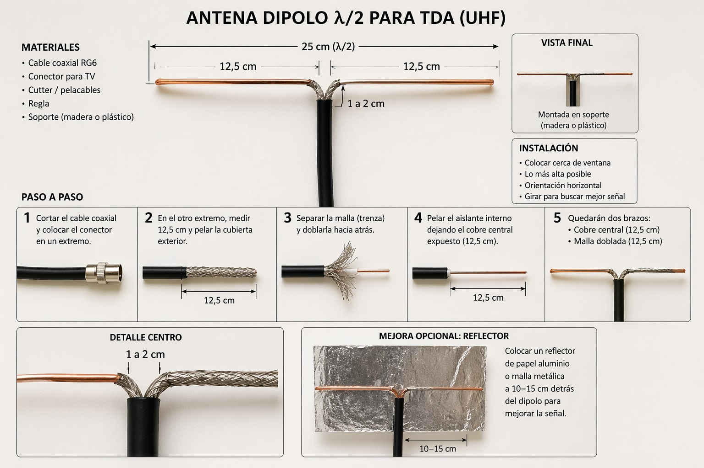
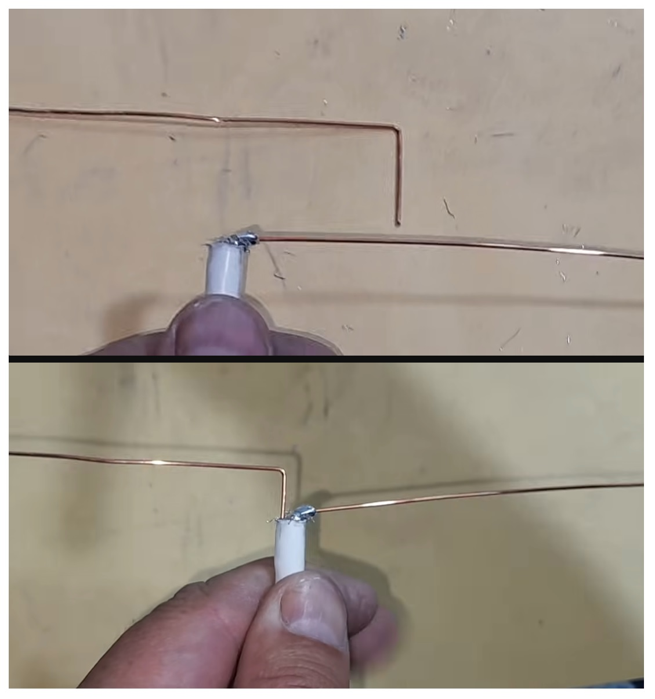

Las antenas están optimizadas para distintas frecuencias. La TV digital terrestre (TDA) usa banda UHF.
En TDA (470–700 MHz), λ ≈ 64 cm a 43 cm
👉 Por eso la antena se diseña para un valor promedio.
Tu antena debe adaptarse a longitudes entre 43 y 64 cm
Resultado: excelente recepción sin complicaciones
Resultado: casi tan eficiente como λ/2 pero más simple
La longitud de onda define el tamaño de la antena

